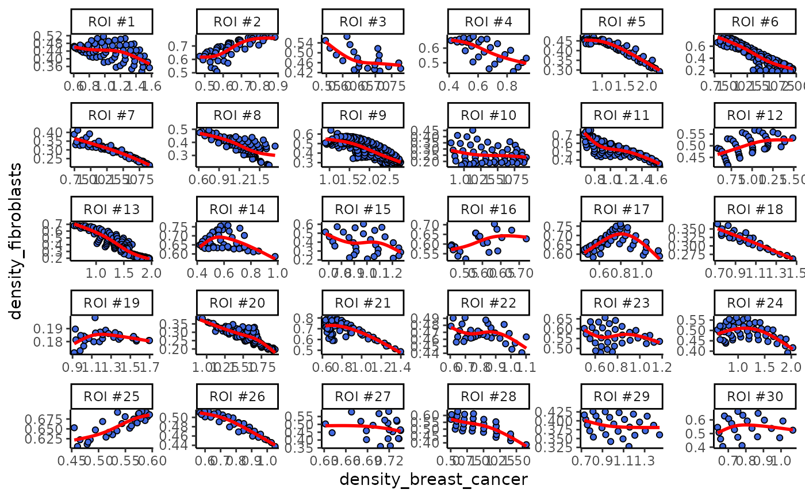

Plot density correlation between two cell types
Usage
plotDensCor(
spe,
celltype1 = NULL,
celltype2 = NULL,
roi = NULL,
probs = 0.85,
fit = c("spline", "linear"),
df = 3,
pt.shape = 21,
pt.size = 1.5,
pt.alpha = 1,
line.type = 1,
line.width = 1,
line.alpha = 1
)Arguments
- spe
A SpatialExperiment object.
- celltype1
Cell type 1 to compare.
- celltype2
Cell type 2 to compare.
- roi
Character. The name of the group or cell type on which the roi is computed. Default is NULL for no facetting by ROI
- probs
A numeric scalar. The threshold of proportion that used to filter grids by density when ROIs have not been identified previously. Ignored if 'roi' is present in the 'metadata' component of spe. Default to 0.85.
- fit
Character. Options are "spline" and "linear".
- df
Integer. Degrees of freedom of the spline fit. Default to 3 (i.e., a cubic spline fit).
- pt.shape
shape of points.
- pt.size
size of points.
- pt.alpha
alpha of points between 0 and 1.
- line.type
shape of line.
- line.width
size of line.
- line.alpha
alpha of line between 0 and 1.
Examples
data("xenium_bc_spe")
coi <- c("Breast cancer", "Fibroblasts")
spe <- gridDensity(spe, coi = coi)
spe <- findROI(spe, coi = coi, method = "walktrap")
plotDensCor(spe, celltype1 = "Breast cancer", celltype2 = "Fibroblasts", roi = coi)
